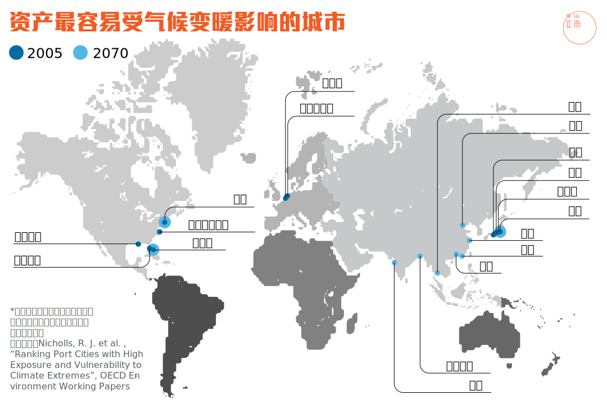
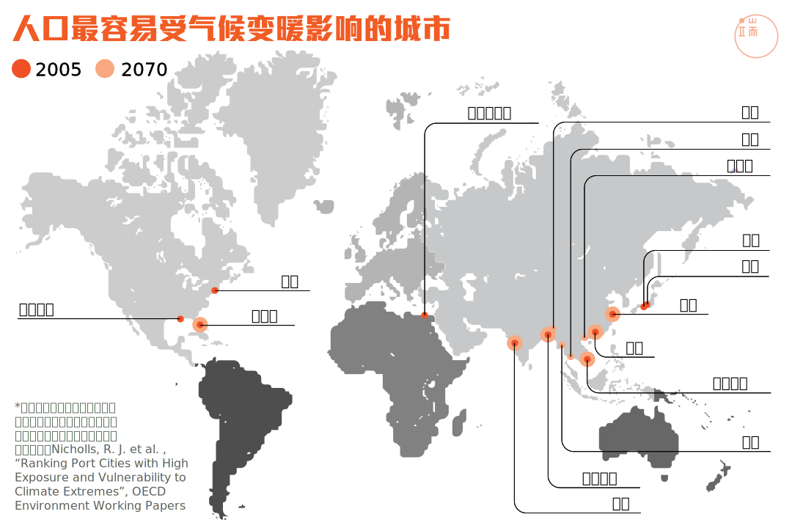
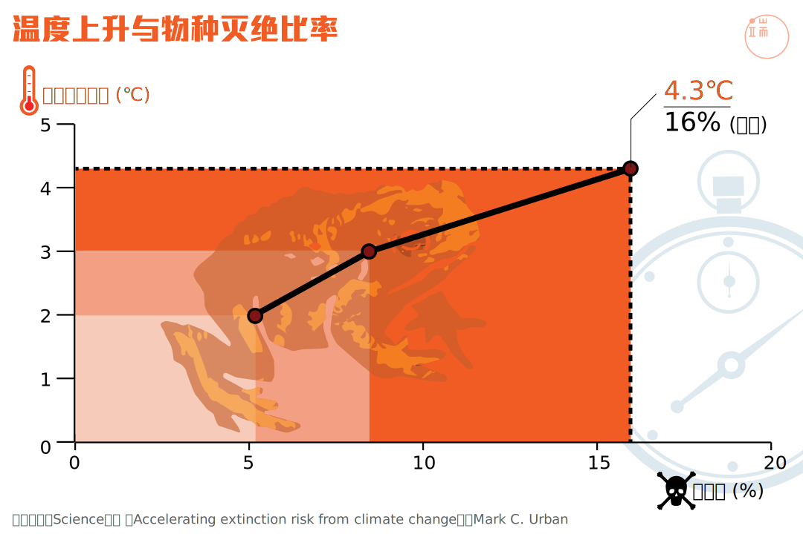
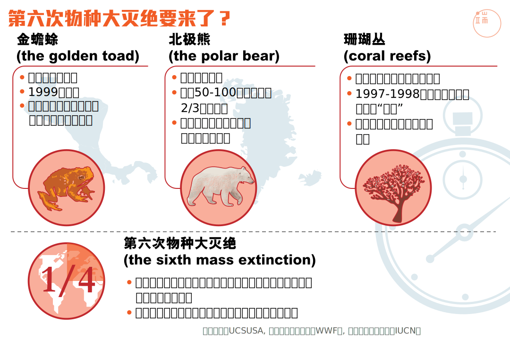
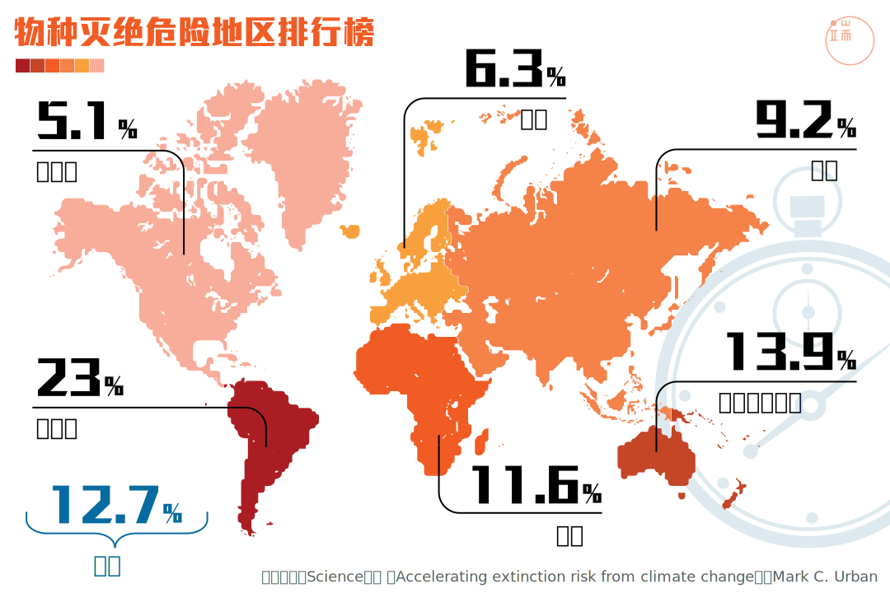
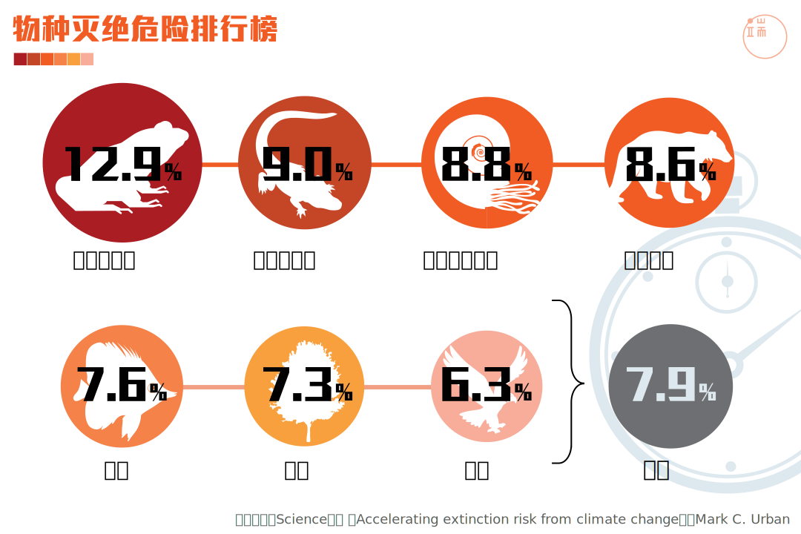

留给我们的时间不多了如果地球继续变暖
你所居住的城市也许不复存在，你喜欢的北极熊、红珊瑚也许会一并消失，如果地表温度持续上升，你还认得自己寄居的地方吗？
本周，世界的眼光再次看向巴黎。这座刚刚经历恐怖袭击的城市，眼下迎来来自一百多个国家的政要、学者和专业人士，参与第21届联合国气候变化大会。
不少与会者表示，这次峰会最有希望促成一百多个缔约国签署具有普遍约束力的协议，替代 1997 年通过的《京都议定书》。而这项协议最核心的议题，就是推动各国努力控制温室气体排放量，使全球升温幅度控制在 2 度以下。
“中国国际民间组织合作促进会”气候变化协调员毕欣欣先生在接受端传媒访问时解释，关心巴黎气候大会的人对会议结果抱有如此乐观的态度，当然和与会国家、企业、个人多年来取得的努力有关，但更重要的事，气候变暖已经愈来愈直接影响到人们的日常生活。而现时正在出席气候大会的“全球建筑最佳实践联盟”执行董事 Peter Graham 博士说得更直接：“我们没有多少时间可以浪费了，再不行动就晚了。”
全球地表平均温度随着时间升高的现象，在 20 世纪下半叶越来越明显。联合国政府间气候变迁小组的评估数据显示，刚刚过去的 2014 年平均气温达到近一百三十余年来最高。美国国家航空航天局在《全球气候变迁》网页上提供了 1880 年代以来全球地表气温系数表。端传媒撷取其中从二战结束至今的信息地图，呈现七十年来地球越变越热的过程。
- 1945
- 1955
- 1965
- 1975
- 1985
- 1995
- 2005
- 2014
气温持续升高意味着未来几十年内，更频繁的极端天气和气象灾难，更多的气候移民，更剧烈的生态恶化，以及随之而来的社会动荡和经济衰退。而研究表明，这些恶果很有可能发生在东亚和南亚的大型沿海城市。事实上，今天全球百分之八十的人口生活在海岸线十公里之内的地方。沿海城市不但拥有大量人口，还有造价极高的交通运输、能源供应、基础公共设施和企业楼宇，一旦遭受规模庞大的飓风、海啸、暴雨等气象灾难，损失惨重。
由全球三十四个市场经济国间组成的政府间组织“经济合作与发展组织”的研究聚焦 136 个人口超过一百万的沿海城市，发现全球大量人口已经暴露在大型洪灾的风险范围内。这项研究按照城市人口和城市资产，统计了 2005 年时，如果发生气象灾害，损失最为惨重的城市，其中已有广州、上海、孟买等亚洲城市；研究进一步推算到 2070 年时，根据人口增长、经济发展、社会文化变化等参数，会有哪些城市会受到最大打击。值得注意的是，在 2070 的名单中，中国、印度、孟加拉、越南等亚洲国家的大型城市都在榜上有名，取代了之前几个位于欧美的港口城市。
-

-

除了气候灾害,也有人担忧气候变暖引起的海平面升高。西雅图城市规划师 Jeffery Linn 以“海平面升高”为主题，创作了多幅地图。他参考美国地质调查所公布的数据，利用电脑制图，一幅幅画出海平面继续上升后，海水淹没城市土地的景象。巴黎、伦敦、洛杉矶，你可以在屏幕上看到这些城市一点点被吞噬。而由港九新界和二百多个岛屿组成的香港，在 Jeffer Linn 的未来地图中也越缩越小。

按住上图中心位置的按钮向左右移动，香港地形以岛屿和山岭为多，海平面上升后，昔日填海造出的土地最易被淹没，港九新界地势较高处仍然存在，但沿海土地尽失。制图: Spatialities
按住上图中心位置的按钮向左右移动，台湾是狭长的岛屿，台北、台中、高雄、台南等主要都市都在西海岸，危险较大。东边的高山和丘陵或可留存。制图: Spatialities
按住上图中心位置的按钮向左右移动，珠江三角洲海平面上升后，广州、深圳、东莞、中山等城市被海水吞噬。制图: Spatialities
全球变暖的同时，生态系统也在剧烈改变。美国《科学》杂志今年五月刊登的论文分析，地表平均气温上升幅度越大，濒临灭绝的地球物种数量越多。论文统计了近年来全球各地灭绝动物的种类和数量。世界动物保护基金等 NGO 组织的用词也许耸动 ——“第六次物种大灭绝”，但所引用的斯坦福大学相关研究资料的确让人无法无视正在大规模减少的物种。
-

-

-

-

- 撰文：杨静
- 资料搜集：杨静 宋宁宇
- 图像设计：曾永曦
- 编辑：马家豪
- 监制：John Lee